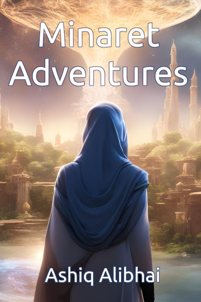

Minaret Adventures

Embark on a literary journey with a collection of 12 mesmerizing short stories that weave together fantasy, modern-day dilemmas, and futuristic adventures, all while placing Islam and Muslims at the heart of each narrative.
- In "The Beast of the White Days," a shaykh grapples with the morality of his newfound powers as a werewolf, igniting a debate on justice, personal responsibility, and secrecy.
- "The Waste" explores the bonds of old friendships as two companions venture into a perilous land to save their town, only to discover an unexpected village thriving amidst the monsters.
- "Reihan and the Ninja Chameleons" introduces us to a samurai rabbit on a quest for peace as he clashes with arrogant ninja chameleons, forcing senseis from both sides to reconsider their stance.
- "Steel and Sacrifice" transports us to the Turkish tribes of Anatolia, where a Turkish bey learns the true meaning of unity and respect through a life-altering encounter with the Mongols.
- In the modern tales, "Eyes of the Abyss" delves into the supernatural as a Muslim woman faces a dark creature and finds strength in family and unity.
- "The Lost Relics" uncovers the mysteries of a lost Islamic civilization through the eyes of three siblings on a remarkable journey.
- "Mama's Ring" and "Ink and Deceit: Crimes in Letters" explore the depths of friendship and justice as characters confront deceit, danger, prejudice, and islamophobia.
- The sci-fi stories take us to the future, from battling digital corruption in "Guardians of the Binary Realm" to defending Earth from alien kaiju in "The Xyronite War." "The Bahamut Incident" presents a gripping tale of survival on a starship, while "Journey to Luminar" forces a starfighter pilot to make a heart-wrenching decision that could save or doom humanity.